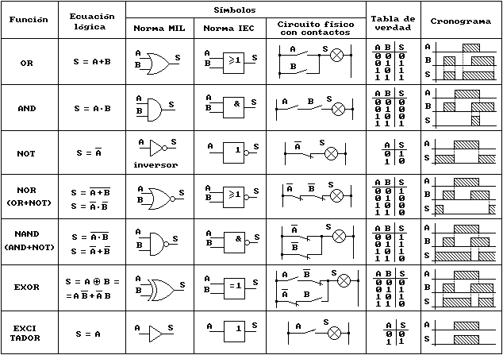

Manual de la asignatura
Arquitectura de computadoras
ARQCO
El alumno determinará arquitecturas de equipos de cómputo mediante el análisis de componentes y periféricos para satisfacer requerimientos de funcionalidad.
Segundo
Evaluación
Saber

Más

Saber hacer

Más
Ser

Bibliografía
TEMA 1 - Señales digitales y analógicas
Click para saber sobre el tema

TEMA 2 - Sistemas de numeración
Click para saber sobre el tema
TEMA 3 - Funciones y familias lógicas
Click para saber sobre el tema
TEMA 1 - Electrónica digital
Debido a que es demasiada información, seguiremos con el tema viéndolo desde el documento principal ya que contiene lo necesario para la materia
TEMA 2 - La computadora
Una computadora es un dispositivo electrónico utilizado para procesar información y obtener resultados. Los datos y la información se pueden introducir en la computadora como entrada (input) y a continuación se procesan para producir una salida (output).
Los componentes físicos que constituyen la computadora, junto con los dispositivos que realizan las tareas de entrada y salida, se conocen con el término hardware (traducido en ocasiones por material).
El conjunto de instrucciones que hacen funcionar a la computadora se denomina programa; a la persona que escribe programas se llama programador y al conjunto de programas escritos para una computadora se llama software (traducido en ocasiones por lógica).
TEMA 3 - Generación de las computadoras
Click para saber sobre el tema
TEMA 1 - Procesadores, arquitecturas RISC y CISC
TEMA 2 - Gamas de procesadores Intel y AMD
TEMA 3 - Medios de almacenamiento
Los dispositivos de almacenamientos más utilizados